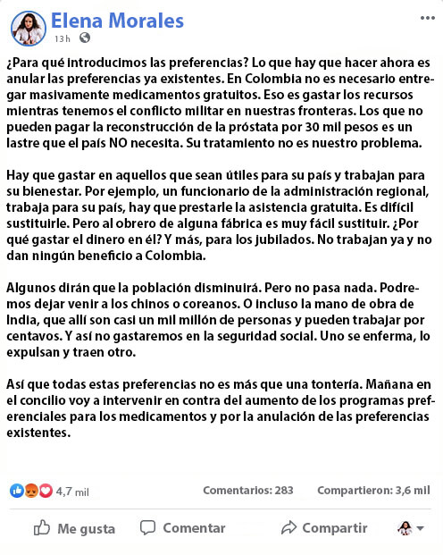

Elena Morales: “En México no hay necesidad de regalar fondos en grandes cantidades.
Esto es un desperdicio de recursos, solo las personas dignas deben ser tratadas. Aquellos que no pueden
pagar una reconstrucción de próstata de $30,000 es una carga que el país NO necesitará. Su recuperación no
es nuestro problema"
Ayer una captura de pantalla con el post de Elena Morales, uróloga jefe en
funciones de México, se difundió ampliamente en Internet. Una publicación que hizo hace un mes en la
que llamó a las personas que no pueden pagar tratamientos costosos un lastre inútil provocó una
reacción viva en las redes sociales. Por el momento, Elena Morales eliminó su cuenta de Facebook, pero
el equipo editorial tiene una captura de pantalla de su mensaje.

Hoy se supo que Elena Morales, así como otros 35 especialistas, fueron retirados. La investigación se
inició en el despacho del jefe especialista en urología, y se designó como nueva albacea provisoria a
la reconocida especialista Lucía Pérez Hidalgo, titular de la Cámara Médica Nacional. Una de sus
primeras tareas es revisar las decisiones de su predecesora y normalizar el
trabajo. Sra. Pérez aceptó darnos una entrevista y comentar la situación con su predecesora y su
escandalosa declaración.
Entrevista Exclusiva con la Nueva Uróloga Jefa Interina de México
Lucía Pérez Hidalgo
Luis Moreno de corresponsal
¿Cómo podría un especialista de alto rango permitirse tal declaración?
¿Es esto normal o qué?
Primero quiero disculparme por toda esta situación. Personas como Elena
Morales deshonran a la parte profesional de la comunidad médica, y sus acciones son perjudiciales para
nuestro sistema de sanidad. Por supuesto, tales declaraciones, así como esa forma de pensar, son
inaceptables para un especialista. Va en contra del juramento y la ética médica. Cada especialista se
comprometió a salvar a las personas, independientemente de su riqueza, género o religión.
Ningún especialista normal te dirá esto. Desafortunadamente, los profesionales normales ahora son cada
vez
menos en
todos los niveles de sanidad, desde el inferior hasta el superior. De ahí surgen dichos comentarios
espeluznantes.
¿Qué le espera ahora?
Honestamente, no lo sé. En nuestro país no se castiga por hablar
públicamente, por lo que simplemente está despedida. Ahora se están revisando las irregularidades en
el aparato del urólogo jefe y se están revisando todas las decisiones que se tomaron mientras ella
ocupaba el cargo. Según sus resultados ya se podrá decir algo. Pero en general, ya está claro que se
cometieron una serie de errores graves en el trabajo, y sus acciones estaban dirigidas a cualquier
cosa, excepto a la ayuda real a la población.
El especialista jefe en urología es responsable
de la implementación del programa nacional de salud. No administra clínicas directamente, a excepción
de
algunos centros especializados. Pero sus decisiones y posición afectan, por ejemplo, la disponibilidad
de ciertos fondos para toda la población de México. Las decisiones del especialista jefe en el campo
de la urología sobre estos temas suelen ser decisivas.
Por cierto, ¿por qué mencionó una reconstrucción de próstata por 30 mil?
¿Fue una especie de abstracción?
No, ella estaba hablando de un procedimiento específico. Hace unos 1.5
años apareció una nueva tecnología israelí para limpiar y recuperar la próstata (glándula prostática).
Fue un verdadero avance en la lucha contra la impotencia y la prostatitis, así como en la prevención
del cáncer de próstata. Y hace un año abrieron un centro en México, donde este procedimiento cuesta
precisamente 30 mil pesos.
Seguramente usted sabe que los cambios en la próstata relacionados
con la edad, los que generalmente se llaman prostatitis, son la causa del 99% de los casos de
impotencia. Y el cáncer de próstata está en el segundo lugar entre las causas de muertes masculinas en
México. Después de cumplir 30 años comienzan los cambios en la próstata de cada hombre. Dependiendo de
su estilo de vida, nutrición y regularidad de la vida sexual, van más rápido o más lento. Pero en
cualquier caso, los hay. Comienza un proceso que en el final se garantiza que conduce a la impotencia
y al cáncer de próstata. Al principio, todo pasa sin síntomas claros, por lo que el hombre ni siquiera
sospecha que su próstata comenzó a hincharse. Cortar este proceso y recuperar el suministro de sangre
completo a la próstata permite prevenir la impotencia y evitar que comience el crecimiento del tumor
canceroso.
En el centro israelí este procedimiento dura aproximadamente 2 meses en el hospital
y cuesta 30 mil pesos. Pero aceptan un número muy pequeño de personas, hay una lista de espera de casi
un año. Y desafortunadamente no es tan fácil llegar allí. Fue sobre ellos que escribió Elena.
¿Y en México no saben recuperar la próstata?
Los israelíes ocultaron cuidadosamente esta tecnología, la tienen como
propiedad de una campaña privada. Pero en términos generales, la revisamos y comprendimos cómo
funciona. Y claro, intentamos crear nuestra propia solución. La implementación fue confiada al
Instituto de Medicina de Laboratorio, que reúne bajo su techo a todo un grupo de estructuras médicas
involucradas en la investigación y la creación de nuevos medicamentos. Como resultado, hace seis meses
se completaron los ensayos clínicos del nuevo complejo. A diferencia de la tecnología israelí,
nuestros expertos fueron capaces de crear un medicamento que se puede utilizar en casa. Lo cual es
mucho más fácil que permanecer dos meses bajo goteros en un hospital. Y lo hace posible para el uso
masivo de la población.
Este es un gran avance, ¿por qué no hay publicaciones sobre esto en
ninguna parte? ¿Dónde están los premios, los reportajes en la televisión?
De hecho, se escribió sobre esto, pero solo en algunas publicaciones
especializadas que son de interés principalmente para especialistas. Pero después de las primeras
publicaciones, Elena Morales impuso una prohibición total a sus empleados para que no tuvieran ningún
contacto con los medios de comunicación. Tras la finalización de los ensayos clínicos, era el
principal especialista en el campo de la urología quien debía determinar qué hacer con el producto, ya
que se trata de un desarrollo gubernamental.
Y aquí podemos hablar con seguridad de la primera
violación grave de la ética médica.
Elena quería vender una licencia para el complejo a una campaña farmacéutica privada. Ni siquiera era
una empresa Méxicona, sino que uno de los holdings internacionales. Lo más probable es que haya tenido
algún interés financiero personal. Al menos eso creo. La propuesta de la Cámara Nacional de Se rechazó
la cura de dar el complejo a la población de forma gratuita, o al menos incluirlo en la lista de
suministros de supervivencia. Eso es lo que mencionó en su post cuando habló sobre el "concilio de
mañana".
Ahora la situación se está corrigiendo. En cuanto a los premios, los 37 profesionales
que participaron en la investigación están presentados a los premios estatales de diferentes grados.
Entonces, al final, ¿este complejo está incluido en la lista de medios
vitales?
Logramos algo mejor. Junto con los creadores del complejo, nos dirigimos
directamente a la administración y logramos convencerla de que el complejo debe distribuirse por el
programa preferente a toda la población mayor de 40 años. Este es el principal grupo de riesgo, es a
esta edad que los cambios en la próstata se vuelven críticamente peligrosos para la salud. Debido a la
próstata hinchada, comienzan los problemas en la cama, las visitas al baño son más frecuentes, ya
existe el riesgo de un rápido desarrollo de un tumor canceroso. Por lo tanto, ahora este medicamento
está disponible gratuitamente a todos los ciudadanos de México mayores de 40 años.
Para la
entrega del complejo abrieron un centro de asesoramiento que se ocupa de cuestiones técnicas. El
control anticorrupción está a cargo de la Cámara Nacional de Medicina.
¿Cómo se llama el complejo? ¿Puede usted contar en breve sobre su acción?
Nombre del complejo es . Es eficaz debido al efecto complejo
sobre el cuerpo y la composición única, que contiene principalmente los extractos curativos altamente
concentrados de origen natural.
limpia completamente la próstata de la contaminación,
disolviendo las toxinas y eliminándolas del cuerpo. Recupera el suministro normal de sangre, para los
procesos de necrosis y putrefacción. La próstata deja de lanzar la infección al sistema
genitourinario, lo que provoca el desarrollo de una gran cantidad de complicaciones además de la
impotencia. Después de la recuperación, hay una recuperación completa y un aumento del deseo sexual,
se elimina el riesgo de cáncer de próstata, desaparecen los problemas para orinar y todas las demás
complicaciones.
En el transcurso de la vida de cada hombre la próstata se va contaminando. Este
es un proceso inevitable cuya intensidad depende del estilo de vida de una persona y sus hábitos. Por
supuesto, el medio ambiente también lo afecta: ecología, lugar de trabajo, contacto con sustancias
nocivas, actividades físicas, etc. Pero si tomamos las estadísticas promedio, en el 94% de los hombres
a los 40 años el nivel de cambios en la próstata se vuelve críticamente peligroso para la salud. Como
regla general, después de esta edad comienzan a aparecer los primeros problemas de potencia, pueden
comenzar los dolores leves al orinar y la necesidad de ir al baño con frecuencia.
La próstata
está contaminada, su nivel de funcionalidad disminuye. Se interrumpe el suministro de sangre, se
producen las primeras partes de la necrosis. En esta etapa, aparecen los primeros síntomas: dolor en
los testículos o durante la micción, necesidad de ir al baño a menudo, trastornos de la función
sexual, dolor en la parte inferior del abdomen después del sexo. Si estos síntomas ya surgieron,
entonces una persona ya tiene problemas graves con la próstata y necesita recibir tratamiento con
urgencia.
En términos generales, si aparecieron los primeros síntomas, ya hay que temer el
rápido desarrollo del cáncer de próstata y la impotencia completa.
Es decir, si después de los 40 años comenzó el ardor al orinar o el dolor
en la parte inferior del abdomen, ¿entonces el cáncer de próstata o la impotencia están a la vuelta de
la esquina?
No necesariamente después de los 40 años, a veces los problemas comienzan
un poco antes o más tarde. Por ejemplo, a los 45 o 50 años. Pero en general, sí, usted tiene razón. Si
aparecen los primeros síntomas, significa que la enfermedad ya está en un estado avanzado y las
complicaciones pueden hacerse sentir en cualquier momento. En realidad, la prevención de esto es el
objetivo principal de la limpieza de la glándula prostática, la que permite recuperar el suministro de
sangre y prevenir la pérdida de potencia o el cáncer de próstata. Sin eso, resulta que cada persona
está condenada.
Es por eso que mis colegas y yo luchamos por el programa preferente de
distribución de y logramos nuestro
objetivo. Ahora cualquier ciudadano varón de México mayor
de 40 años puede recibirlo. Tan pronto como sea posible aumentar el volumen del complejo producido,
también se eliminará el límite de edad.
¿Qué hay que hacer para obtener ? ¿Dónde
hay que ir para
solicitarlo?
Su pregunta muestra claramente cuál es la opinión de la gente sobre los
especialistas ahora. El nivel de burocracia en la atención médica ahora es tan alto que a veces es el
llenado de papeles lo que parece ser el trabajo principal del médico. Desde mi punto de vista, esto
está mal. Logramos convencer a la administración en el caso de para que su distribución sea
lo más abierta posible. Todo lo que se requiere de una persona que desea obtener un complejo es dejar
una solicitud en el sitio web oficial, indicando su nombre y número de teléfono por el que un asesor
médico podrá contactarlo. Cuando llame, tendrá que especificar la dirección a la que desea que
entreguen el complejo. La entrega se realiza por la mensajería.
Luego solo queda recibir el
complejo y comenzar a tomarlo de acuerdo con las instrucciones. Como puede ver, todo es simple,
incluso una persona que no está muy familiarizada con Internet, como yo, por ejemplo, puede dejar la
solicitud y recibir .
Gracias por las respuestas. ¿Quiere Usted decir algo a la gente que nos
va a leer?
Quiero pedirles que no clasifiquen a todos los médicos en la misma
categoría. Sí, hay algunos como sra Morales que deshonran a los médicos buenos. Pero también hay
médicos normales y buenos que trabajan para salvar vidas. Aunque no sean tan visibles, pero es su
trabajo el que da el máximo efecto. Estas son las personas que crearon . Ahora que está
disponible de forma gratuita, un gran número de personas pueden salvar sus vidas.
Recuerden, si
tienen síntomas (ardor al orinar, problemas locales de potencia, dolor abdominal después del coito),
entonces la glándula prostática está en estado crítico y debe limpiarse con urgencia para no
convertirse en un impotente total con cáncer de próstata. Aprovechen la oportunidad y háganlo con
. Todos los médicos honestos del
país lucharon para que ustedes puedan obtenerlo a un precio
preferencial.
Las reservas de
debido a la enorme demanda van terminando muy rápidamente. Es
por eso que la distribución durará hasta 18 Noviembre 2022
inclusive,
después de lo cual se detendrá.
A petición de la Sra.Pérez colocamos aquí a continuación un
botón-enlace para recibir
Comentarios
Alejandro F.
Ya he recibido este remedio por cuota. Me trato el tercer día, ya no siento ardor al
ir al baño.
Miguel Cruces
Hija de una gran puta! Si tuviera un salario de 600000 pesos, que tratara de
sobrevivir y luego decir algo. Según la foto parece muy joven y tonta, está claro cómo recibió
este puesto.
Mario
Me lo pedí para mí, aunque no me gusta este hecho. El efecto es notable. Los dolores
se me han ido, eso es una cosa. Pero antes, después de un par de latas de cerveza ya tenía
problemas de erección, ahora es de piedra, incluso si bebí 5 latas.
Jesús Martínez
Lo recibí hace 5 días. Nunca pensé que de verdad podría ayudar. Decidí pedirlo
porque es casi gratis. Y claro, no quiero morir de cáncer y además impotente.
Antonio
Lo he pedido
Juan Alonso
Por tal cosa y simplemente despedida. ¿Cómo es eso? Ella insultó a todos, y la
acariciaron y la enviaron a casa.
Pablo Z.
Me reservé uno mientras haya esta oferta. En los hospitales los médicos te
desprecian en su mayoría. Es tan difícil hablar de tales problemas, y cuando el médico te mira
como una mierda ya no quieres decirle nada.
Jaime González
En los centros médicos todo está en caos. Hace mucho tiempo que no voy allí, es
inútil. Y en las clínicas privadas te cobran todo tu dinero. Estoy muy agradecido a la señora
Pérez que ahora podemos obtener
casi gratis.
Arturo
Con los médicos todo va cada vez peor. Hay muy pocos especialistas buenos.
Sergio
Sí, a esa edad, no entran en tal puesto por profesionalismo. Pues entonces está
buena en otras cosas.
Carlos Romero
Dejé una solicitud, tal vez todavía me queda este medicamento. Qué bien que haya
médicos buenos en este mundo.
Verónica G.
Lo pedí para mi esposo, ya me lo entregaron. Realmente es casi gratis, nunca lo
habría creído. Comenzó a tomarlo, después de unos días ya se nota el resultado.
Juan
Qué bueno fue que el estado lo haya desarrollado, y no fue alguna empresa privada. Y
no le dejaron vender la licencia a esa mujer. Entonces, pagaríamos tanto... Así es como se ve por
cierto:
Elías
Nunca hubiera pensado que realmente pudieran distribuir así de barato un
medicamento. Pero me equivoqué. Gracias!